静岡県南伊豆町・手石にある、
弓ヶ浜を一望できる高台のキャンプ場です。
山の上にある静かなキャンプ場のため、
サイトまでは約100段の階段があります。
少しだけ不便ですが、
登った先には弓ヶ浜を見渡す景色と、
静かな時間が待っています。
波の音で目覚め、
夜は満天の星空を見ながら焚き火を楽しむ。
都会の喧騒を離れ、
ゆっくりと時間が流れる場所です。
高台から見渡す美しい海と白い砂浜
光害が少なく、夜は満天の星空・朝は美しい日の出
ペット無料で大切な家族と一緒に
各サイトに電気・水道完備 / トイレあり
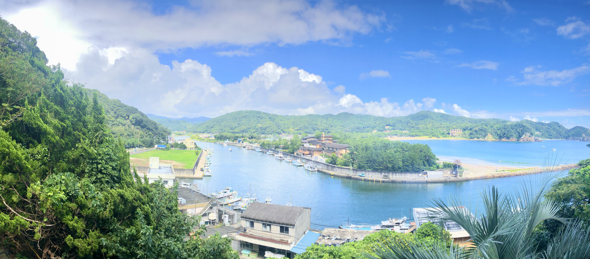
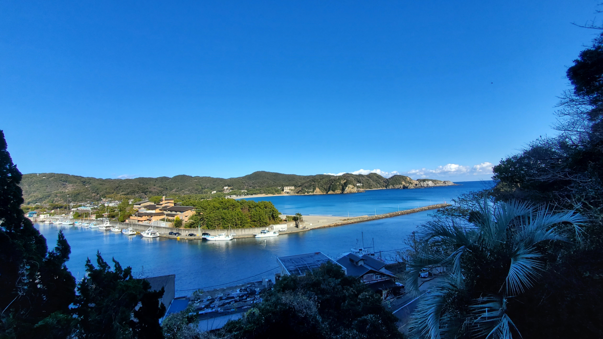
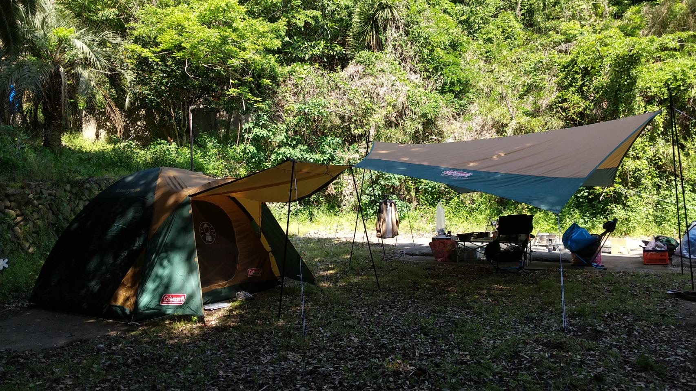
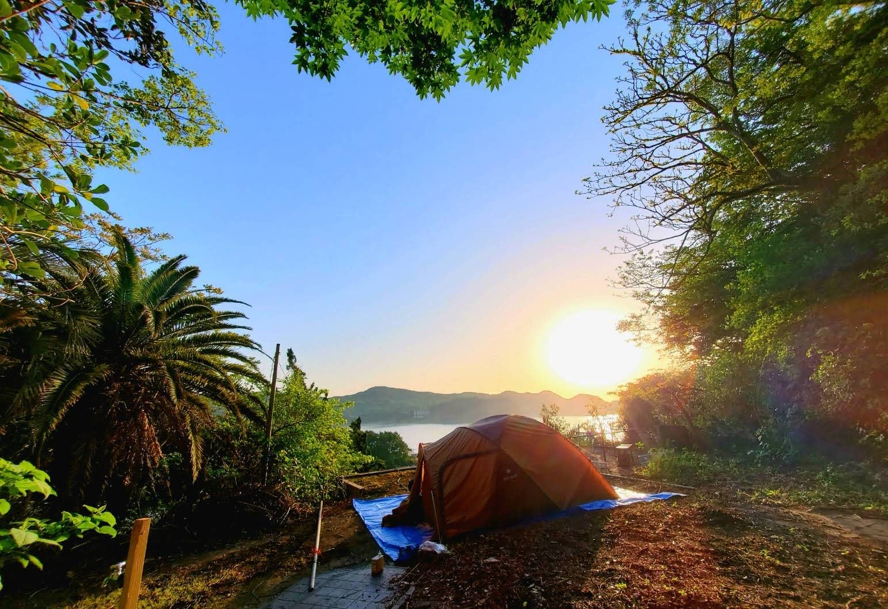
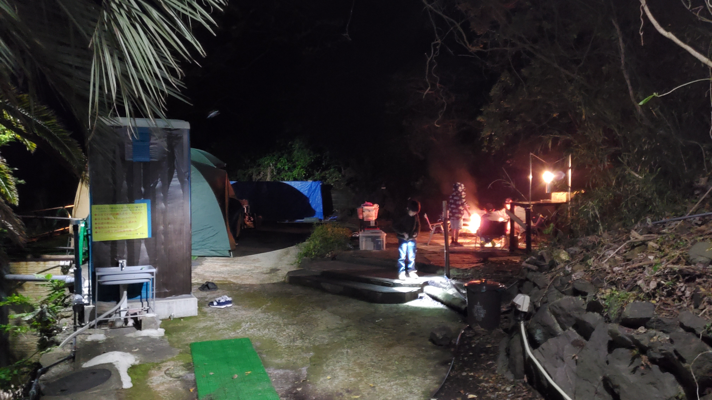
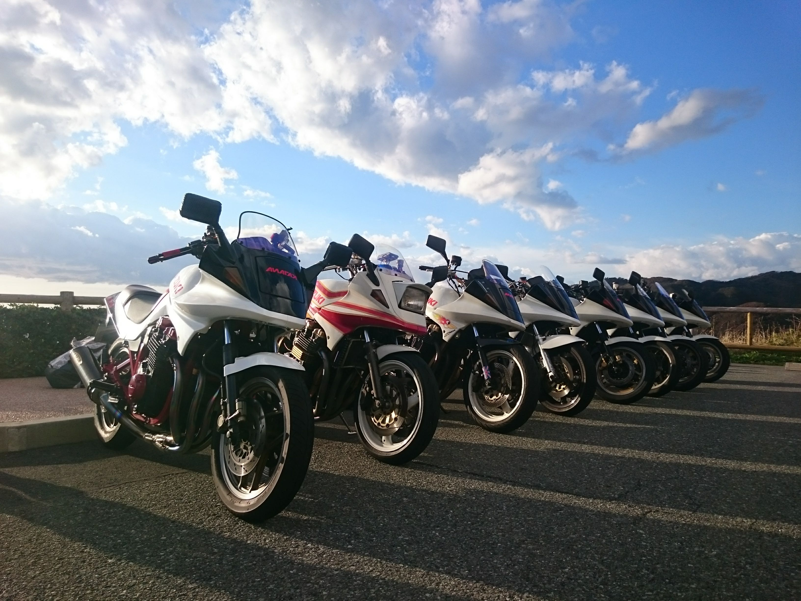
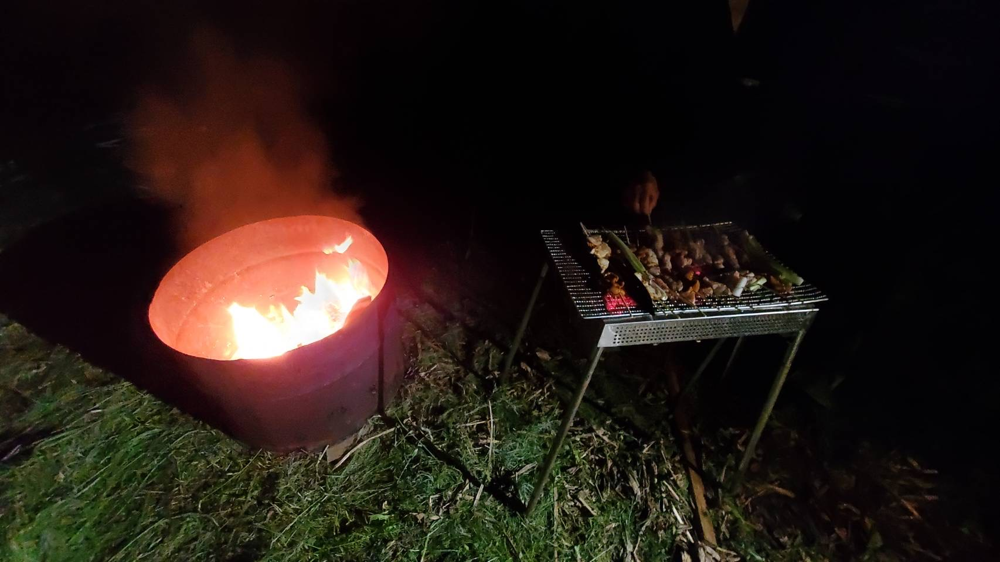
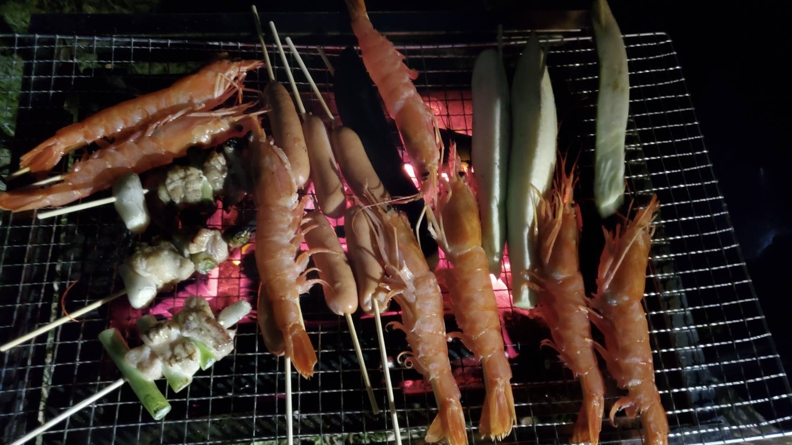
※料金は税込です。宿泊は1泊、デイキャンプは日帰りの料金です。
宿泊・デイキャンプともに、1サイトにつき大人最大3名まで。
3,500円
1泊・1名利用
チェックイン 15:00
チェックアウト 翌10:00
15:00〜翌10:00
7,000円
1泊・2名利用まで
追加料金：1名につき1,500円
大人最大3名まで（大人3名：8,500円）
10:00〜17:00
5,000円
1サイト・2名利用まで
追加料金：1名につき1,500円
1サイトにつき大人最大3名まで
大人3名でのご利用：6,500円
・小学生以下無料
・ペット無料
・駐車場無料（3台まで）
BEFORE YOUR VISIT
サイトまでは約100段の階段を上ります。
ご予約前に、実際の通路の様子をご確認ください。
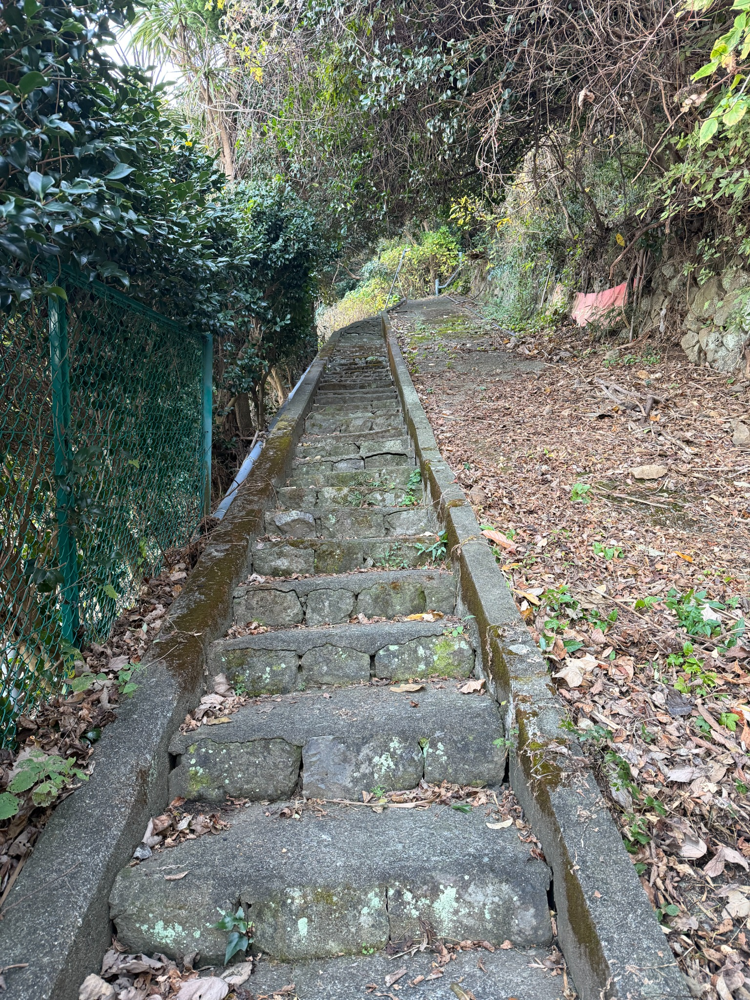
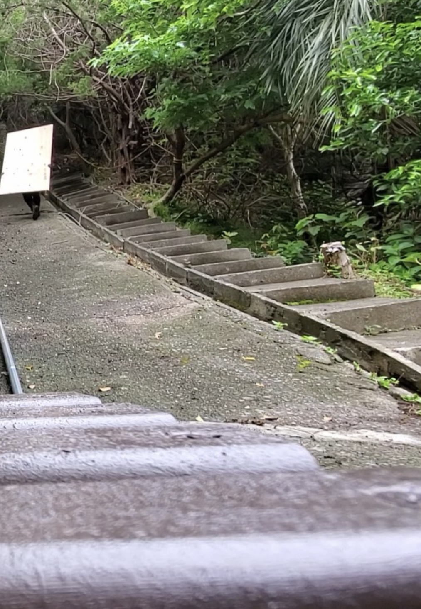
階段での移動に備え、荷物は小分けにし、背負えるバッグなどをご用意ください。歩きやすい靴でお越しいただき、雨の日や暗い時間帯は足元に十分ご注意ください。
階段の上り下りに不安がある方は、ご予約前にお電話でご相談ください。
小学生以下のお子様とペットは無料です。ご予約時に大人・お子様の人数と、ペット同伴の有無をお伝えください。
シャワー設備はありません。近隣の温泉施設をご利用ください。
天候による営業状況やキャンセル条件は、ご予約時にお電話でご確認ください。ご予約の変更・キャンセルが必要な場合も、お電話でご連絡ください。
ご予約・お問い合わせはお電話でお願いいたします。
宿泊・デイキャンプのご希望、ご利用日、人数をお伝えください。
宿泊は15:00〜翌10:00、デイキャンプは10:00〜17:00です。
住所：
〒415-0153 静岡県賀茂郡南伊豆町手石1212-1
電話：
090-6156-7424
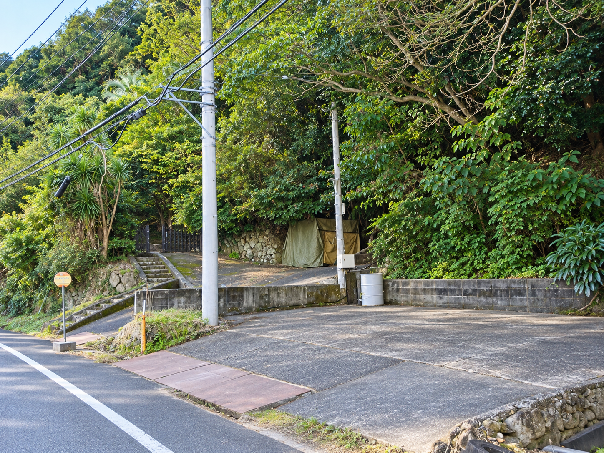